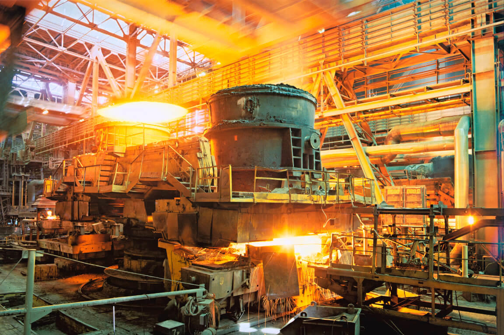
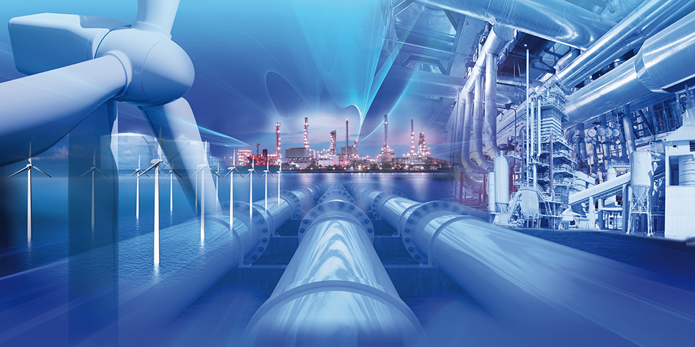
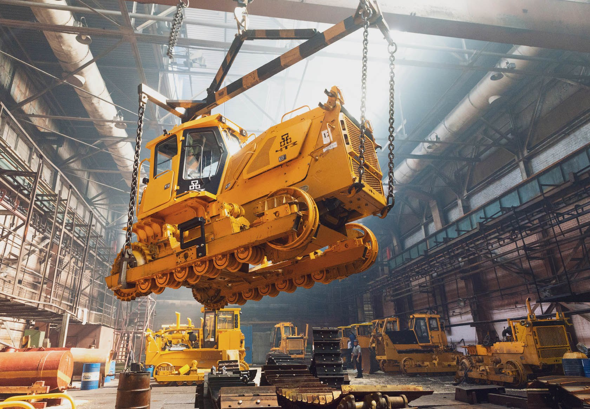
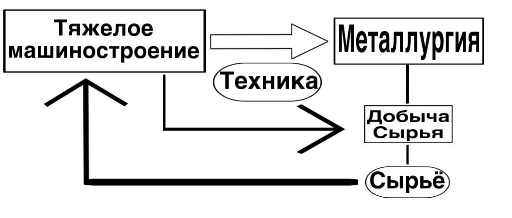
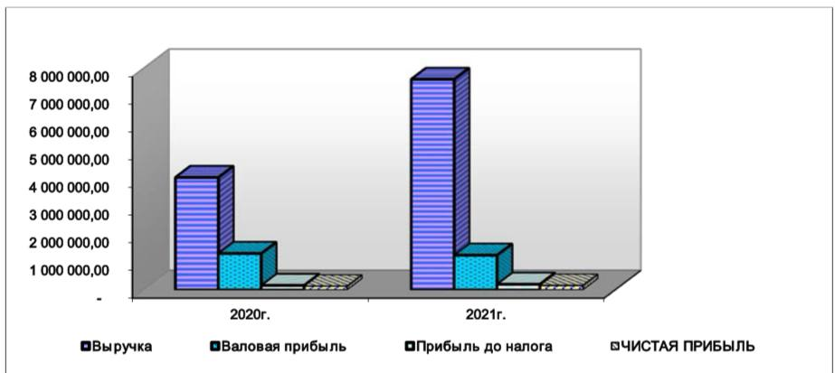
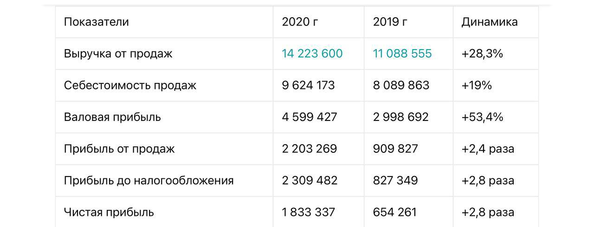

Тяжелое машиностроение - совокупность подотраслей машиностроения, предприятия которых заняты производством металлургического, горнорудного, крупного кузнечно–прессового, дробильно-размольного, подъёмно-транспортного оборудования и т.д.

металлургия
Металлургия составляет около 5% от ВВП нашей страны. Эта отрасль оказывает колоссальное влияние на промышленность,строительство и топливно-энергетический комплекс. Поэтому,если рассматривать влияние этих факторов на экономику России,зависящих от металлургии,то суммарное ВВП будет составлять 58%.
Эти заводы расположены в таких областях, как: Челябинская(челябинский металлургический завод), Свердловская(Уральский металлургический завод), Кемеровская(Гурьевский металлургический завод), Ленинградская(ленинградский металлургический завод).

энергетика
Роль энергетики распространяется на все отрасли экономики,поэтому энергетика является базовой отраслью всей российской экономики.
Машиностроительные предприятия находятся в Москве(коломенский завод), Санкт-Петербурге(кингисеппский машиностроительный завод), Нижнем Новгороде(машиностроительный завод им. М. Воробьева), Екатеринбурге(Свердловский машиностроительный завод) и других крупных городах России.

машиностроение
Машиностроение является ведущей отраслью в экономике России. ВВП машиностроение равно примерно 15%. Также отрасль машиностроения даёт 34,5% рабочих мест для населения,занятого в промышленной сфере. Роль энергетики распространяется на все отрасли экономики,поэтому энергетика является базовой отраслью всей российской экономики.
Заводы по производству оборудования для энергетики находятся в Москве(ЭНЕРГОПОТОК), Санкт-Петербурге(АО «Невский Завод»), Казани(завод энергетического оборудования), Челябинске (Челябинский завод горного оборудования) и других городах.
Схема связей всех отраслей тяжелого машиностроения:
Актуальность проекта
Актуальность
Проект на тему "Роль тяжелой промышленности в экономике России" может включать в себя анализ текущего состояния отрасли, оценку ее вклада в ВВП, рассмотрение инвестиционных потребностей, технологического развития и возможностей.
Тема такого проекта сегодня значима в свете стремления к модернизации и диверсификации экономики России, а также в контексте глобальных вызовов, связанных с энергетическими технологиями, инновациями и желанием обеспечить устойчивый рост в долгосрочной перспективе.
Предприятия
ОАО «Уральский завод тяжелого машиностроения»
Уральский завод тяжелого машиностроения выпускает прокатные станки, машины непрерывного литья заготовок, доменное и дробильно-размольное оборудование, буровые установки, тяжелые гидравлические прессы и др. Вклад этого завода в экономику России заключается в производстве продукции,которая используется для добычи и переработки трех четвертей железной руды, выплавки двух третей всей российской стали, выпуска всех железных рельсов. К тому же,продукция,выпущеная на Уральском заводе тяжелого машиностроения,экспортируется в 35 разных стран. По данным официальным промежуточного бухгалтерского отчета,в период с января по сентябрь 2023 года
Электростальский завод тяжелого машиностроения
На сегодняшний день Электростальский завод тяжелого машиностроения специализируется на выпуске продукции для металлургических и трубных цехов, горнодобывающей промышленности, а также станов для малоотходных технологий. На заводе выпускается 70% оборудования для химической, нефтяной и газовой промышленности. Так же завод занимается разработкой машин для Германии, Японии, Индии, Китая, США и еще более 30 зарубежных стран.
Новосибирский стрелочный завод
Новосибирский стрелочный завод на сегодняшний день один из крупнейших производителей стрелочной продукции в странах СНГ и России.Завод специализируется на выпуске продукции для РЖД, в том числе стрелочной продукции для скоростного движения подвижного состава. Тек же завод выпускает продукцию для металлургических и горно-обогатительных комбинатов, угольных разрезов, шахт и так же трамвайных путей и метрополитенов.
Машиностроительный завод «ЗиО-Подольск»
Машиностроительный завод «ЗиО-Подольск» — российское предприятие, специализирующееся на производстве теплообменного оборудования высокой сложности для атомной и тепловой энергетики, нефтехимической и газовой промышленности. Расположено в городе Подольске Московской области. Является одним из основных предприятий России в области разработки и поставки оборудования для АЭС. «ЗиО-Подольск» выпускает системы охлаждения,оборудование для газнефтехимии и многих комплектующих для современных АЭС. АО «Подольский машиностроительный завод» вошёл в десятку лучших предприятий Городского округа Подольск по наполнению муниципального бюджета в 2019 году.
ПАО «Ижорские заводы»
Машиностроительный завод,расположенный в городе Колпино,выпускает оборудование для атомной энергетики, газоперерабатывающей и нефтехимической промышленности; металлургические полуфабрикаты, сварочные материалы; карьерные экскаваторы.
АНЖЕРОМАШ
Анжерский Машиностроительный Завод. является одним из крупнейших производителей горно-шахтного оборудования. Основным видом деятельности завода является производство машин и оборудования для добычи полезных ископаемых и строительства. Этот завод имеет важное значение для обеспечения страны качественным оборудованием, используемым в различных сферах не только в России. АМЗ активно участвует в экспорте своей продукции за пределы России. Это способствует расширению экспортного потенциала страны, а также укреплению ее позиций на международном рынке. Не стоит забывать, что завод является одним из самых масштабных предприятий в своём регионе, тем самым способствуя развитию промышленности и инфраструктуры. Это предоставляет рабочие места, улучшает экономическую активность и способствует общему развитию региона.
Братский завод ферросплавов (БРАЗ)
Братский завод ферросплавов (БРАЗ) играет существенную роль в экономике России. БРАЗ поставляет ферросплавы, используемые в различных отраслях, таких как металлургическая промышленность, производство стали, химическая промышленность и другие. Это включает ферросплавы на основе ферросилиция (с содержанием кремния 65% и 75%)., феррохрома, ферросплавы для легирования стали, что оказывает значительное влияние на производство в различных сферах экономики. Также завод активно развивает технологические инновации для улучшения производственного процесса и качества производимых материалов. Это способствует модернизации и развитию металлургической отрасли в целом. Предприятие осуществляет поэтапный переход на выплавку ферросилиция из кварцитов собственного Уватского месторождения.
АО «ТЯЖМАШ»
Группа компаний «ТЯЖМАШ» — это уникальные производственные площадки, представительства, филиалы и дочерние общества в России, Европе и Латинской Америке, а также обособленные подразделения с мощным конструкторско-технологическим потенциалом. В числе партнеров ГК «ТЯЖМАШ» — ПАО «РусГидро», АО «ПО «Севмаш», ПАО «ГМК «Норильский никель» и другие компании в России и за рубежом. Находится завод в городе Сызрань. С 1941 года АО «Тяжмаш» - занимается разработкой и изготовлением дробильно-размольного, топливоприготовительного, транспортирующего оборудования, оборудования для АЭС, гидро-, тепло-, атомных электростанций и наземных стартовых комплексов космодромов, а также машины для размалывания рудных пород и конвейерного оборудования для металлургии. Несомненно этот завод вносит огромный вклад в экономику нашей страны. Это современное предприятие, имеющее все возможности для выполнения заказов любой сложности. Завод заслужил признание практически на всех континентах, поэтому он сотрудничает с множество зарубежных предприятий, а также снабжает большое количество промышленных объектов на территории нашей страны.

ООО «Белэнергомаш – БЗЭМ»
ООО «Белэнергомаш – БЗЭМ» – это ведущее предприятие энергомашиностроения с восьмидесятилетним опытом работы в отрасли. Сегодня специализированные производства ООО «Белэнергомаш – БЗЭМ»: производство соединительных элементов трубопроводов, производство труб, кузнечно-прессовое производство, производство сильфонных компенсаторов, котельное производство и производство строительных металлоконструкций – выпускают широкую номенклатуру продукции для энергетики и строительства. Само предприятия находится в городе Белгород. Наличие аккредитованного испытательного центра, уникального отечественного и зарубежного оборудования, обеспечивает высокий уровень выполняемых работ и услуг. Качество продукции реализуется успешно действующей на предприятии системой менеджмента качества. С каждым город завод становится лучше, улучшает оборудование и оптимизирует все процессы. Например в 2020 года компании удалось увеличить чистую прибыль в 2,5 раза благодарю снижению себестоимости. Компания играет большую роль в экономики нашей страны, так как имеет огромные объемы производства и гигантскую маржинальность.
Саратовский завод тяжелых зуборезных станков (СЗТЗС)
«Саратовский завод тяжелых зуборезных станков» на протяжении уже почти 60-ти лет является единственным предприятием в России, основу деятельности которого составляет производство различных видов оборудования для изготовления конических и гипоидных зубчатых колес. «Саратовский завод тяжелых зуборезных станков» имеет в собственности все необходимое: специализированное станочное оборудование, производственные площади, конструкторскую и технологическую документацию. Наличие технологического и кадрового потенциала позволяет предприятию участвовать в реализации поддержанного федеральными органами государственной власти РФ проекта возрождения отечественного станкостроения.